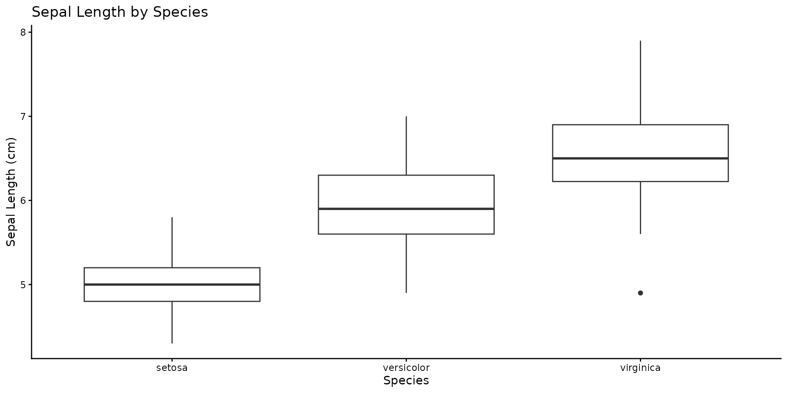
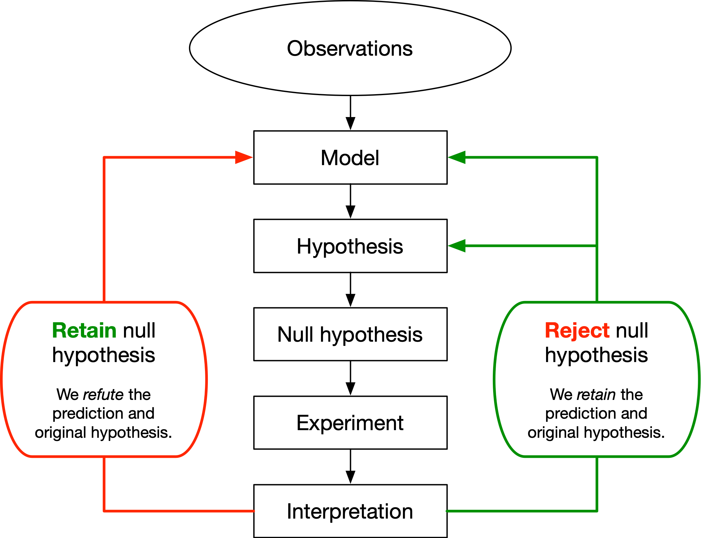
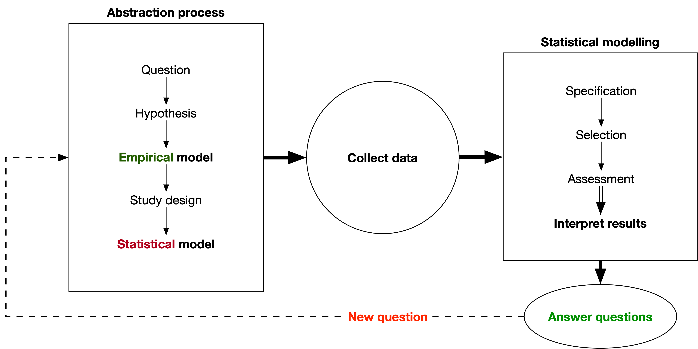
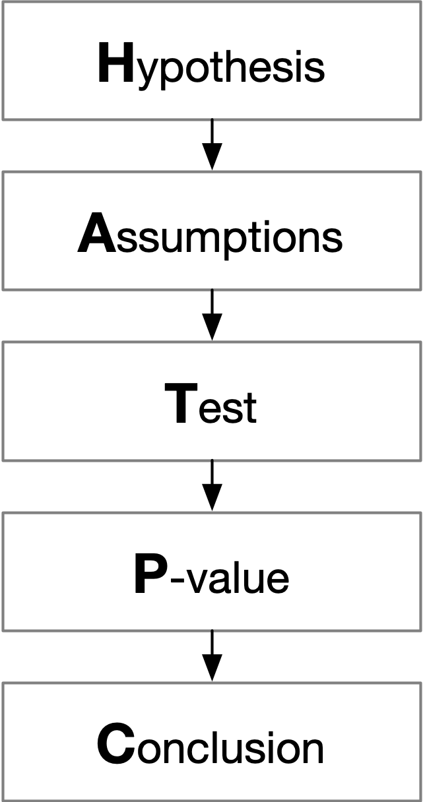
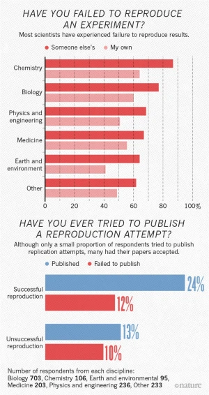
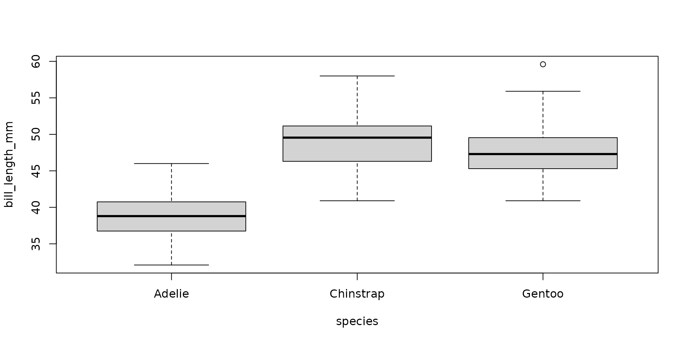

ENVX1002 Statistics in Life and Environmental Sciences
Januar Harianto
The University of Sydney
Feb 2026
Importance of statistics
Never leave a number all by itself. Never believe that one number on its own can be meaningful. If you are offered one number, always ask for at least one more. Something to compare it with.
– Hans Rosling (1948-2017)
Why learn statistics?
All of science (and industry) are increasingly data-driven and computational:
Research papers are filled with statistical analyses
Business and policy decisions are based on data analytics
Environmental policies are guided by statistical models
Medical treatments are evaluated using statistical methods
Most of you are majoring in a field that will require you to understand and use statistics in some form.
Benefits
Even if you don’t become a data scientist, statistics will help you to:
Evaluate claims critically
Understand and analyse data in your field
Make informed decisions based on evidence
Communicate effectively
Create compelling data visualisations and reports
Present findings clearly to different audiences
Solve real-world problems
Design and analyse experiments properly
Make evidence-based predictions and identify trends
It’s not possible to shoot more efficiently from outside the penalty area than many players shoot inside it. It’s not possible to lead the world in weak-kick goals and long-range goals. It’s not possible to score on unassisted plays as well as the best players in the world score on assisted ones. It’s not possible to lead the world’s forwards both in taking on defenders and in dishing the ball to others. And it’s certainly not possible to do most of these things by insanely wide margins.
But Messi does all of this and more.
Messi playing for Argentina
Image credit: Кирилл Венедиктов, CC BY-SA 3.0 GFDL, via Wikimedia Commons
Note: common dataset used in statistics and machine learning.
Serious stats
Visualise
Code
# load librariespacman::p_load(ggplot2, rstatix, gt)# create boxplotggplot(iris, aes(x = Species, y = Sepal.Length)) +geom_boxplot() +theme_classic() +labs(y ="Sepal Length (cm)", title ="Sepal Length by Species")

Serious stats
Infer
We use formal statistical tests to determine if differences are statistically significant so that we can make inferences about the population based on the sample data – part of the scientific method.
Code
# run ANOVAmodel <-aov(Sepal.Length ~ Species, data = iris)f_stat <-summary(model)[[1]]$`F value`[1]p_val <-summary(model)[[1]]$`Pr(>F)`[1]rstatix::anova_summary(model) |>gt() |>tab_caption(caption ="Table 1: One-way ANOVA results comparing sepal length between iris species" )
Table 1: One-way ANOVA results comparing sepal length between iris species
Effect
DFn
DFd
F
p
p<.05
ges
Species
2
147
119.265
1.67e-31
*
0.619
Scientific reporting
A one-way ANOVA revealed significant differences in sepal length between species (ANOVA, F(2, 147) = 119.26, p < .001).
The scientific method – fundamental to centuries of scientific progress
If you discover something (or not), it should be possible for others to verify your findings independently
Your findings should be reproducible and replicable

The logical framework by Underwood (1997)
No single method
Variations of the scientific method exist – it is a framework that guides the process of scientific inquiry

No single method
HATPC
Hypothesis – Assumptions – Test statistic – P-value – Conclusion

You will see some variation of the HATPC in your first-year units – a common framework for report writing
Key principles (1/2)
Observation: Identify a phenomenon of interest that can be measured
Question: Formulate a question that can be answered by collecting data
Research: Review the literature to understand what is already known – your question may already have been asked by someone else. This step helps in understanding what is already known and what gaps in knowledge may exist.
Hypothesis: Formulate a testable hypothesis – something that can be assessed using data collection and analysis
Key principles (2/2)
Experiment: Design an experiment to test the hypothesis
Data collection: Collect data
Analysis: use statistical methods to analyse the data and determine if results are statistically significant or demonstrate a pattern
Conclusion: Interpret the results and draw conclusions. If the results are not significant, this is still a valid conclusion!
Reproducibility crisis despite the scientific method
More than 70% of researchers have tried and failed to reproduce another scientist’s experiments, and more than half have failed to reproduce their own experiments.

Statistical analysis, experimental design and data issues are the main factors affecting research reproducibility.
Reproducibility and replicability
Key definitions
Reproducibility: the ability to re-run an analysis and obtain the same results
Replicability: the ability to obtain the same conclusions using a different dataset or study population
Scientific findings should be both reproducible and replicable – the tools that we use should facilitate this in the most efficient way possible.
Reproducibility
How would you explain to someone how to reproduce this plot…
library(palmerpenguins)boxplot(bill_length_mm ~ species, data = penguins)

An over-simplification
Those without programming knowledge will still struggle to understand and use the two lines of R code shown above.
What you’ll learn
How to read and write basic R code for data analysis
How to debug by reading error messages and experimenting with code
Transferable programming skills – all programming languages follow similar principles and you will find others easier to learn, even if not for statistics…

_Messi.jpg){kind=link}